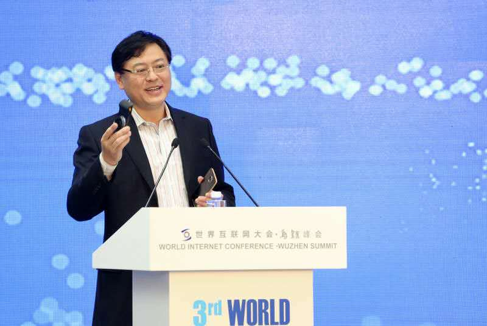

文/王新喜
17日下午在乌镇互联网大会举行的新闻发布会上，联想集团董事长兼CEO杨元庆与华为、小米达成共识，“争取三家（联想、华为、小米）将来成为全球的前三名，到那时候，我们再比拼谁是第一，谁是第二，谁是第三”。

杨元庆从国际视野谈比拼：血拼国内市场的国产厂商未来必由之路
中国手机市场已经进入了激烈竞争的阶段。
杨元庆对媒体称：“中国智能手机市场大，也不过是全球30%的市场，世界的市场更大，另外70%的市场在海外。我们今天在中国使用的这些手段到海外是不一定能用的，甚至有些是非法、违法的，所以，如果你在这个地方习惯了，到那个地方去做违法的事，根本不可能在世界的范围内，让企业的发展突破这个天花板。所以企业也要互相监督，我们应该把目光瞄向全球的市场。争取三家（联想、小米和华为）将来成为全球的前三名，到那时候，再比拼谁是第一，谁是第二，谁是第三。这个是一个很好的共识。”
杨元庆这一番话其实为正在国内市场血拼的国产手机厂商指出了一条更具前景的道路。
长期以来，国产厂商聚焦在国内市场比拼性价比与线上线下的渠道战争，尽管近两年不少厂商出海征战，但出海的重点市场基本都在扎堆印度市场，主力依然在国内。但随着国内市场饱和，人口红利已尽，出海征战事实上也将是一条必然之路。
因为从目前来看，国产手机也面临着相对较好的内外部环境。一方面是苹果iPhone陷入颓势，产品创新趋缓，用户对苹果的期待值正在降低，三星受到note7电池事件的影响，还处于恢复期。从目前国际手机市场的现状来看，国产手机比拼国际市场正当时。
另一方面，国产手机军团的实力正在增强。根据小米董事长雷军的说法，国内手机过去五年增长很快，越做越好。目前全球前十名，中国占六个。
事实上，杨元庆跳出区域性市场，洞察全球市场资源，也源于这两年联想手机业务自身的经验与布局，联想的PC与移动业务一直以来并没有依赖国内市场，在中国以外市场，联想的出货量上升态势明显。
数据显示，联想移动业务出货量环比上升25%，其中，中国以外市场环比大幅增长达27%，Moto的业务量提升较为明显，环比上升近40%。亚太地区，尤其是印度区呈持续强劲增长态势。
印度市场是国际化比拼第一站：增长速度还有巨大的想象空间
因此从整个国际市场来看，联想事实上是全球智能手机的主力军。据杨元庆透露，联想在三四十个国家排名市场前五。而在印度市场，联想的增速非常快。据国际数据公司IDC的报告显示，以出货金额排名，联想目前已超越苹果、Micromax等竞争对手，成为印度智能手机市场第二大手机品牌，市场份额达到9.6%。
当然这与联想扎根印度本土已久以及对当地的市场需求与政策的了解程度相关，联想在印度已经经营了11年，相对于其他国产厂商匆匆进军印度不同，而11年的时间已经足够联想打好一个稳固的市场渠道布局以及用户基础。
对于贫穷的人口大国印度来说，其市场政策的一个重要特点是印度欢迎国外大厂来印度开设工厂与零售店来解决就业问题，但不欢迎只通过电商渠道销售产品的厂商。而目前联想在印度的专营联想PC、手机的旗舰店在印度全国有232家，在印度当地也有代工厂，这对于带动当地市场的就业与繁荣有一定帮助，某种程度上契合了印度的国情与政策。
我们知道，去年印度智能手机销量约为1.3亿部，到今年第一季度已经超越美国成为仅次于中国的全球第二大智能手机市场。虽然市场很大，但印度人均收入低，数据显示，45%的用户使用100美元以下的功能机，40%的用户使用100-250美元的中端手机，还有15%的用户偏爱250美元以上的高端手机。
对于国产手机而言，印度市场显然还存在着巨大的人口红利有待挖掘。所以我们看到，在印度市场，魅族、酷派、联想、OPPO、小米、华为、金立和vivo等多家中国手机品牌厂商都已经驻扎于此，而国产手机的性价比战略在印度市场依然适用，在印度市场的增长速度也在加快，包括小米、OPPO和vivo在内的国产手机品牌都争取到了更多用户。
联想在印度市场的扩张，一方面源自于其本身PC、移动等业务在国际市场的深耕与布局，从制造供应链、销售渠道、售后、实体店等做到了多方面的支撑，也在于其产品战略分布合理相关。从目前看，联想一方面锁定中高端用户，一方面夯实专利，另一方面继续走高性价比路线，这很好地覆盖了各种需求层次的人群，确保联想在各个价位都拥有优势产品。包括K5Plus、ZUK Z1、Moto E、Moto G、 Moto X Play等，都取得了不错的市场成绩。
而相比之下印度本土智能手机品牌Micromax、Lava和Intex的销量不断下滑，这和国产手机的冲击有很大关系。但对于国产手机而言，印度市场或许只是国际战场比拼的第一站，虽然目前联想暂时取得领先优势，但其他国产手机增长速度依然很快，因此国际市场的比拼，印度市场由于人口基数大，还远未到市场格局落定的时候。
印度之外的第三世界海外市场有待挖掘
而在印度市场之外，我们看到有些国产手机正在有针对性的通过线下渠道与营销战布局欧洲与美国市场，市场份额与销量也在逐步提升，但进入美欧市场，专利是最大障碍，如何应付当地的专利诉讼将是重大难题。
从某种程度上说，联想的国际化布局相对更为均衡一些，根据杨元庆的说法是，目前联想的移动业务在海外占比达到90%，联想旗下的手机（包括Lenovo品牌和moto品牌）在巴西市场第二，印度市场第二，俄罗斯市场第二，乌克兰市场第二，希腊市场第二。在捷克、卡塔尔、智利、哥伦比亚和阿根廷都是市场第三。
某种程度上，联想的国际化程度与全球各区域市场布局的均衡性，也可以是国产手机出海值得借鉴的厂商。在近日海关公布的2016年第三季度中国手机整机口排名中，联想以1348万部的出货量排名第四，而在中国手机厂商最难进入的美国市场，联想的出货量达到了121万部。当然，这也是杨元庆在乌镇大谈国际化比拼的底气。
尽管对于国产手机而言，联想在海外市场具备一定的样本意义，但联想一家显然也难以支撑起整个手机出口与销量的大幅增长。数据显示，与国内市场第三季度总销量1.15亿部市场空间相比，第三季度中国手机整机出口量达到了2.8亿部（扣除苹果出口的6726万部），整整超过了一倍还多。
在实际销售量上，第三季度全球手机销量达到了3.62亿部，同样，正如杨元庆所言，中国市场只占到了全球市场的30%，因此对中国手机厂商而言，更应广阔的市场空间应该在国外。在国产手机当中，联想是中国国际化程度最早也最高的科技企业之一，无论是PC行业还是现在的智能手机行业，其国际化的经验都是中国企业走向国际的一些相对有用的思路，此次联想若携手华为、小米结盟，共赴国际市场，对全球手机格局无疑也将形成深刻影响。
国产厂商迎来利好环境：但还需要适应国际规则、当地政策与市场土壤
从目前的国产厂商总的布局来看，虽然近两年中国手机企业国际化的脚步加快，但许多厂商进展不大，即使是在成长最快的印度市场，部分厂商已经铩羽而归，部分企业比如小米则在印度遭遇到爱立信的专利诉讼。
而在遭遇海外巨头专利诉讼这一事情上，魅族的麻烦更大些，比如最近高通已经向美国国际贸易委员会、慕尼黑地方法院起诉魅族侵犯公司专利，并且还在法国倡导侵权扣押行动。
在这些现象背后，是中国手机企业还没有学会适应国际规则与不同于国内的环境土壤，在专利上尚未夯实自身的基础，通过国内的方式处理国际市场的问题，必然会遭遇水土不服的难题，带来的是阵痛与不适应。
国际化程度不足是当前许多国产手机的短板，也会让各大厂商很容易看到天花板，加上局限国内市场也必然导致品牌知名度与用户群扩展乏力，导致的结果必然是品牌影响力受限，难以提升自身的品牌溢价也压制着各自的高端战略，而国际化则有助于扩展品牌上行的空间。
这里面我们知道苹果三星占据了绝大部分的利润，这显然与它们的国际化布局尤其是美欧等高端市场地区的布局扩展息息相关，国际化有助于打破国内市场局限拉升利润提升品牌溢价，但更重要的是，国际化战略由于面向更广阔的市场与用户需求，它能倒逼厂商推动产品创新。
比较典型的联想的Moto Z，这款产品颠覆性创新突破传统手机局限，让手机功能无限扩展，带来了不一样的用户体验，模块化手机的由来也与当前市场受阻的增长瓶颈与各种用户群体对手机创新的需求相关。Moto Z有标准的ID和16个开放的摩磁触点，对接的是人们的智能设备越来越多之后，它们之间互联互通、协同应用的用户需求与新玩法，比如杨元庆说到的，Moto Z连上JBL音箱就是一个非常好的音效设备，连上哈苏模块就变成单反相机。这种玩法显然是有效的。根据联想Q2财季，Moto产品销量的大幅提升，相比前一季度增长了近40%。
从目前国际手机市场的现状来看，国产手机或许迎来了一个更好的时刻。目前三星需要时间从电池事件中恢复，而苹果下滑颓势明显，其新产品在新技术的应用方面进一步趋缓，下行态势明显。在国际两大巨头销售下降，这对于中国厂商也是一种利好消息。
进军国际市场，联想、华为和小米等代表性的手机巨头更需要在产品创新和与当地市场渠道扎根布局做强，并熟悉国际规则与区域性的市场的政策，在未来几年要改变全球手机市场的格局，也并非没有可能。但国内手机厂商更应讲究谋略，必须考虑需求在哪里，懂得取悦当地市场并改善与当地政府关系，扎根当地渠道与制造业产业链，并需要懂得致力于推动当地市场繁荣与就业率的增长，谋求一种互利依赖捆绑关系做强。而不是仅仅为自身市场增长与生态布局去推动业务落地。而国际化市场的开拓则能有效冲淡国内市场压力并通过全球视野倒逼产品创新空间。
总的来说，这些年来，国产厂商在供应链、专利、用户基础、技术等诸多方面已经有所积累，冲击高端与布局国际化市场都迎来了最好的时间窗口，也是时候在国际市场有所作为并与苹果三星争雄了，在未来几年，还需要看国产厂商能否冷静而有效的抓住这一波机遇。正如杨元庆所说，到那个时候，再比拼谁是第一，谁是第二，谁是第三。
- 推荐图文
- 推荐人物
- 推荐企业